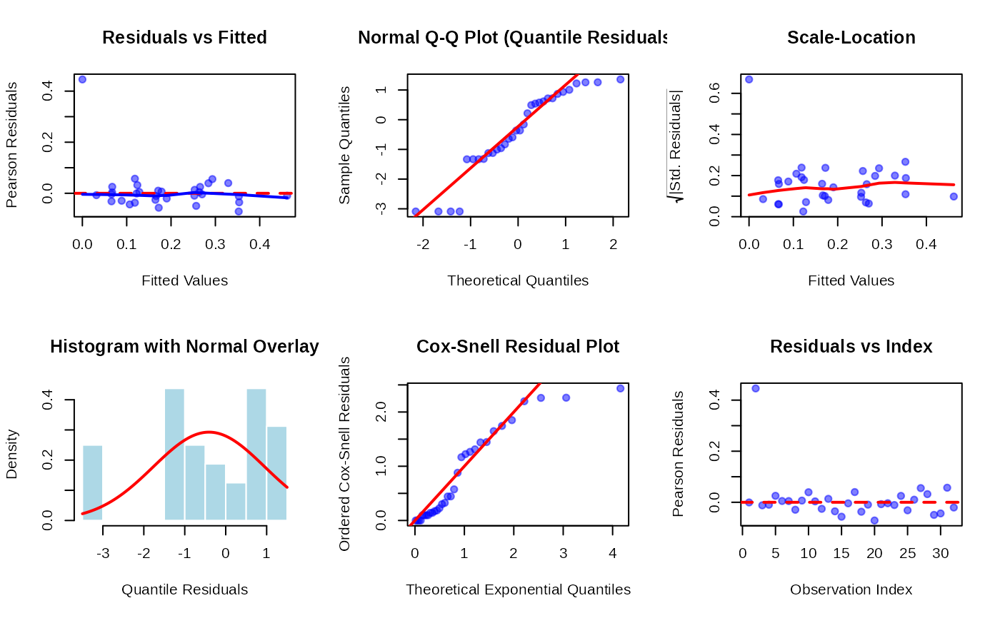
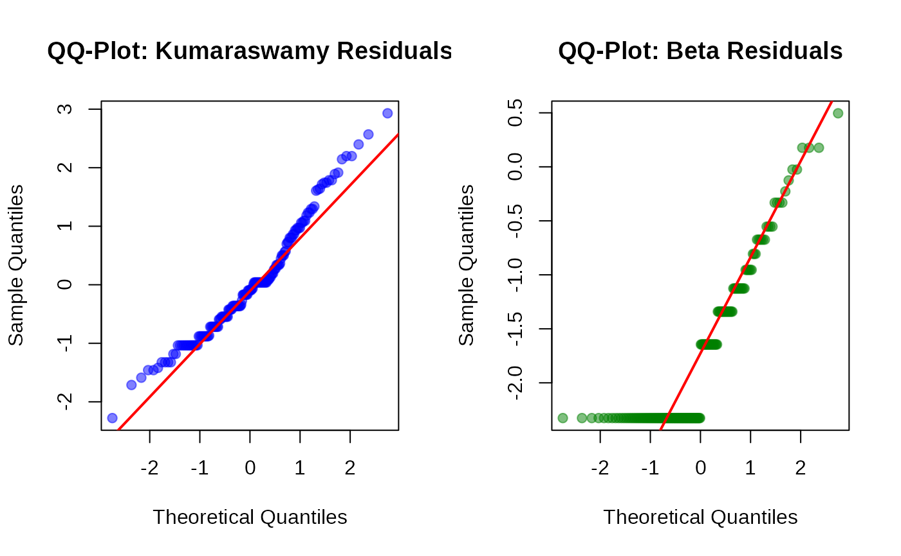
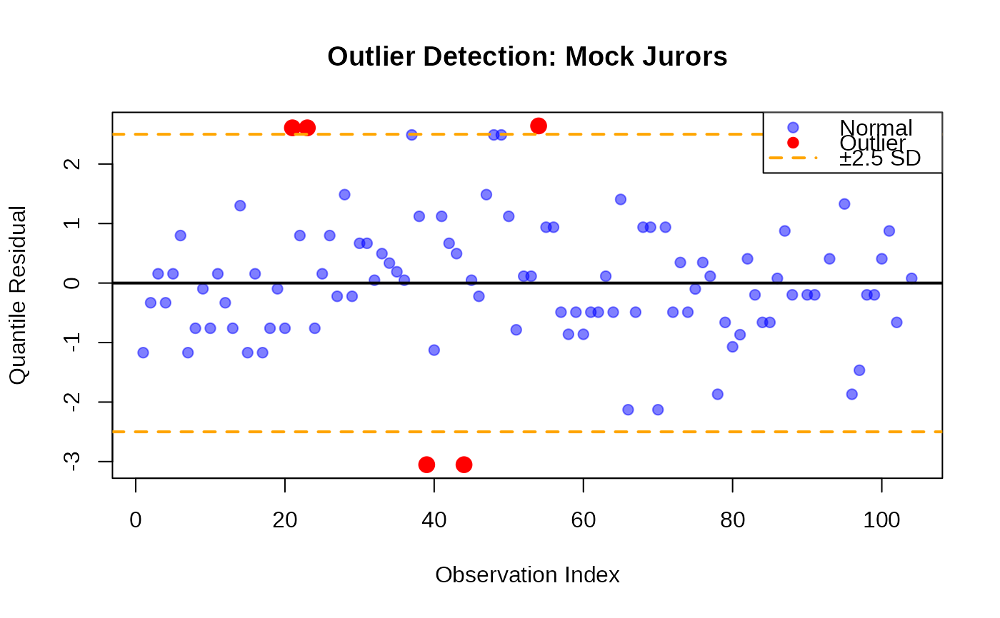

Extract Residuals from a Generalized Kumaraswamy Regression Model
residuals.gkwreg.RdExtracts or calculates various types of residuals from a fitted Generalized
Kumaraswamy (GKw) regression model object of class "gkwreg", useful for
model diagnostics.
Arguments
- object
An object of class
"gkwreg", typically the result of a call togkwreg.- type
Character string specifying the type of residuals to compute. Available options are:
"response": (Default) Raw response residuals: \(y - \mu\), where \(\mu\) is the fitted mean."pearson": Pearson residuals: \((y - \mu) / \sqrt{V(\mu)}\), where \(V(\mu)\) is the variance function of the specified family."deviance": Deviance residuals: Signed square root of the unit deviances. Sum of squares equals the total deviance."quantile": Randomized quantile residuals (Dunn & Smyth, 1996). Transformed via the model's CDF and the standard normal quantile function. Should approximate a standard normal distribution if the model is correct."modified.deviance": (Not typically implemented, placeholder) Standardized deviance residuals, potentially adjusted for leverage."cox-snell": Cox-Snell residuals: \(-\log(1 - F(y))\), where \(F(y)\) is the model's CDF. Should approximate a standard exponential distribution if the model is correct."score": (Not typically implemented, placeholder) Score residuals, related to the derivative of the log-likelihood."partial": Partial residuals for a specific predictor in one parameter's linear model: \(eta_p + \beta_{pk} x_{ik}\), where \(eta_p\) is the partial linear predictor and \(\beta_{pk} x_{ik}\) is the component associated with the k-th covariate for the i-th observation. Requiresparameterandcovariate_idx.
- covariate_idx
Integer. Only used if
type = "partial". Specifies the index (column number in the corresponding model matrix) of the covariate for which to compute partial residuals.- parameter
Character string. Only used if
type = "partial". Specifies the distribution parameter ("alpha","beta","gamma","delta", or"lambda") whose linear predictor contains the covariate of interest.- family
Character string specifying the distribution family assumptions to use when calculating residuals (especially for types involving variance, deviance, CDF, etc.). If
NULL(default), the family stored within the fittedobjectis used. Specifying a different family may be useful for diagnostic comparisons. Available options match those ingkwreg:"gkw", "bkw", "kkw", "ekw", "mc", "kw", "beta".- ...
Additional arguments, currently ignored by this method.
Value
A numeric vector containing the requested type of residuals. The length corresponds to the number of observations used in the model fit.
Details
This function calculates various types of residuals useful for diagnosing the adequacy of a fitted GKw regression model.
Response residuals (
type="response") are the simplest, showing raw differences between observed and fitted mean values.Pearson residuals (
type="pearson") account for the mean-variance relationship specified by the model family. Constant variance when plotted against fitted values suggests the variance function is appropriate.Deviance residuals (
type="deviance") are related to the log-likelihood contribution of each observation. Their sum of squares equals the total model deviance. They often have more symmetric distributions than Pearson residuals.Quantile residuals (
type="quantile") are particularly useful for non-standard distributions as they should always be approximately standard normal if the assumed distribution and model structure are correct. Deviations from normality in a QQ-plot indicate model misspecification.Cox-Snell residuals (
type="cox-snell") provide another check of the overall distributional fit. A plot of the sorted residuals against theoretical exponential quantiles should approximate a straight line through the origin with slope 1.Partial residuals (
type="partial") help visualize the marginal relationship between a specific predictor and the response on the scale of the linear predictor for a chosen parameter, adjusted for other predictors.
Calculations involving the distribution's properties (variance, CDF, PDF) depend
heavily on the specified family. The function relies on internal helper
functions (potentially implemented in C++ for efficiency) to compute these based
on the fitted parameters for each observation.
References
Dunn, P. K., & Smyth, G. K. (1996). Randomized Quantile Residuals. Journal of Computational and Graphical Statistics, 5(3), 236-244.
Cox, D. R., & Snell, E. J. (1968). A General Definition of Residuals. Journal of the Royal Statistical Society, Series B (Methodological), 30(2), 248-275.
McCullagh, P., & Nelder, J. A. (1989). Generalized Linear Models (2nd ed.). Chapman and Hall/CRC.
Examples
# \donttest{
# Assume 'mydata' exists with response 'y' and predictors 'x1', 'x2'
# and that rgkw() is available and data is appropriate (0 < y < 1).
set.seed(456)
n <- 150
x1 <- runif(n, -1, 1)
x2 <- rnorm(n)
alpha <- exp(0.5 + 0.2 * x1)
beta <- exp(0.8 - 0.3 * x1 + 0.1 * x2)
gamma <- exp(0.6)
delta <- plogis(0.0 + 0.2 * x1)
lambda <- exp(-0.2 + 0.1 * x2)
# Use stats::rbeta as placeholder if rgkw is not available
y <- stats::rbeta(n, shape1 = gamma * alpha, shape2 = delta * beta) # Approximation
y <- pmax(pmin(y, 1 - 1e-7), 1e-7)
mydata <- data.frame(y = y, x1 = x1, x2 = x2)
# Fit a GKw model
model <- gkwreg(y ~ x1 | x1 + x2 | 1 | x1 | x2, data = mydata, family = "gkw")
# --- Extract different types of residuals ---
resp_res <- residuals(model, type = "response")
pearson_res <- residuals(model, type = "pearson")
quant_res <- residuals(model, type = "quantile")
cs_res <- residuals(model, type = "cox-snell")
# --- Diagnostic Plots ---
# QQ-plot for quantile residuals (should be approx. normal)
stats::qqnorm(quant_res, main = "QQ Plot: GKw Quantile Residuals")
stats::qqline(quant_res, col = "blue")

# Cox-Snell residuals plot (should be approx. exponential -> linear on exp-QQ)
plot(stats::qexp(stats::ppoints(length(cs_res))), sort(cs_res),
xlab = "Theoretical Exponential Quantiles", ylab = "Sorted Cox-Snell Residuals",
main = "Cox-Snell Residual Plot", pch = 1
)
abline(0, 1, col = "red")

# --- Compare residuals using a different family assumption ---
# Calculate quantile residuals assuming underlying Beta dist
quant_res_beta <- residuals(model, type = "quantile", family = "beta")
#> Using different family (beta) than what was used to fit the model (gkw).
#> Using different family (beta) than what was used to fit the model (gkw). Recalculating fitted values...
# Compare QQ-plots
stats::qqnorm(quant_res, main = "GKw Quantile Residuals")
stats::qqline(quant_res, col = "blue")

stats::qqnorm(quant_res_beta, main = "Beta Quantile Residuals (from GKw Fit)")
stats::qqline(quant_res_beta, col = "darkgreen")
 # --- Partial Residuals ---
# Examine effect of x1 on the alpha parameter's linear predictor
if ("x1" %in% colnames(model$x$alpha)) { # Check if x1 is in alpha model matrix
# Find index for 'x1' (could be 2 if intercept is first)
x1_idx_alpha <- which(colnames(model$x$alpha) == "x1")
if (length(x1_idx_alpha) == 1) {
part_res_alpha_x1 <- residuals(model,
type = "partial",
parameter = "alpha", covariate_idx = x1_idx_alpha
)
# Plot partial residuals against the predictor
plot(mydata$x1, part_res_alpha_x1,
xlab = "x1", ylab = "Partial Residual (alpha predictor)",
main = "Partial Residual Plot for alpha ~ x1"
)
# Add a smoother to see the trend
lines(lowess(mydata$x1, part_res_alpha_x1), col = "red")
}
}
# Examine effect of x2 on the beta parameter's linear predictor
if ("x2" %in% colnames(model$x$beta)) {
x2_idx_beta <- which(colnames(model$x$beta) == "x2")
if (length(x2_idx_beta) == 1) {
part_res_beta_x2 <- residuals(model,
type = "partial",
parameter = "beta", covariate_idx = x2_idx_beta
)
plot(mydata$x2, part_res_beta_x2,
xlab = "x2", ylab = "Partial Residual (beta predictor)",
main = "Partial Residual Plot for beta ~ x2"
)
lines(lowess(mydata$x2, part_res_beta_x2), col = "red")
}
}
# }
# --- Partial Residuals ---
# Examine effect of x1 on the alpha parameter's linear predictor
if ("x1" %in% colnames(model$x$alpha)) { # Check if x1 is in alpha model matrix
# Find index for 'x1' (could be 2 if intercept is first)
x1_idx_alpha <- which(colnames(model$x$alpha) == "x1")
if (length(x1_idx_alpha) == 1) {
part_res_alpha_x1 <- residuals(model,
type = "partial",
parameter = "alpha", covariate_idx = x1_idx_alpha
)
# Plot partial residuals against the predictor
plot(mydata$x1, part_res_alpha_x1,
xlab = "x1", ylab = "Partial Residual (alpha predictor)",
main = "Partial Residual Plot for alpha ~ x1"
)
# Add a smoother to see the trend
lines(lowess(mydata$x1, part_res_alpha_x1), col = "red")
}
}
# Examine effect of x2 on the beta parameter's linear predictor
if ("x2" %in% colnames(model$x$beta)) {
x2_idx_beta <- which(colnames(model$x$beta) == "x2")
if (length(x2_idx_beta) == 1) {
part_res_beta_x2 <- residuals(model,
type = "partial",
parameter = "beta", covariate_idx = x2_idx_beta
)
plot(mydata$x2, part_res_beta_x2,
xlab = "x2", ylab = "Partial Residual (beta predictor)",
main = "Partial Residual Plot for beta ~ x2"
)
lines(lowess(mydata$x2, part_res_beta_x2), col = "red")
}
}
# }